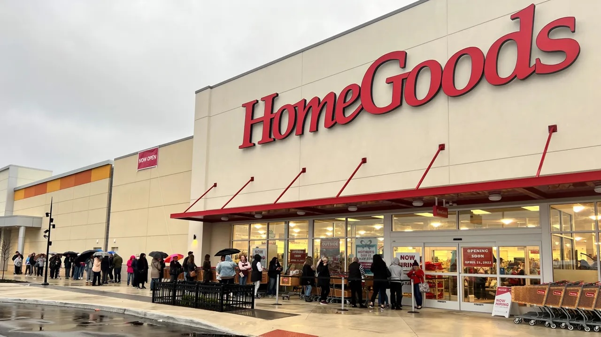
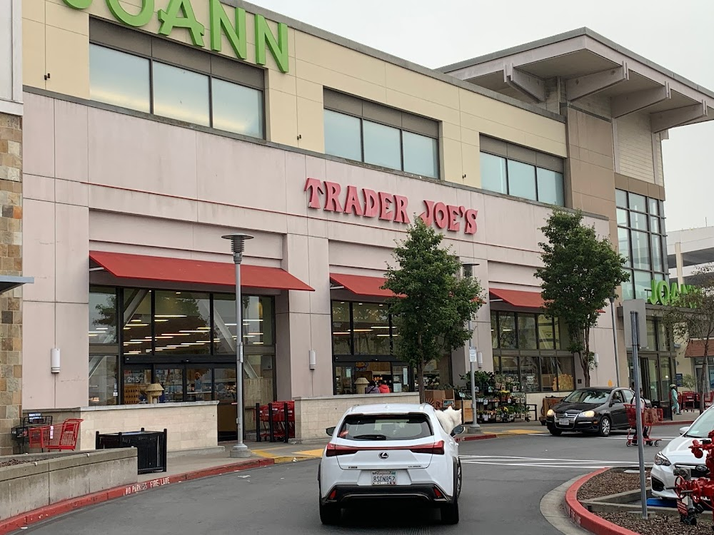
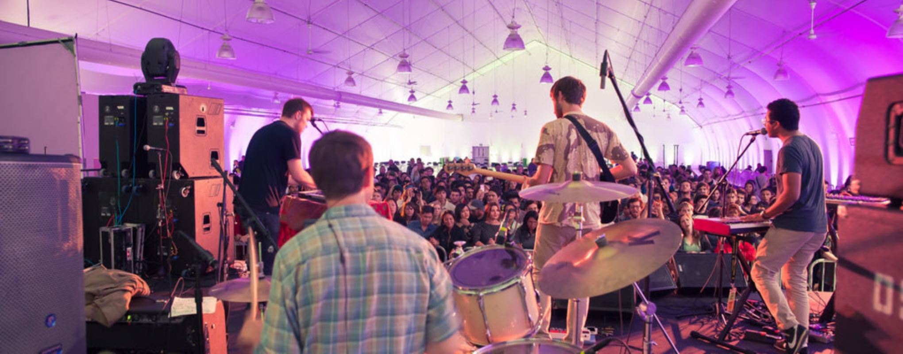

02/2021 to 07/2022 Homegoods Sales Associate TJX Company- Valencia, CA
- Consistently satisfied customers with their specific needs
- Developed team-building skills when interacting with teammates or supervisors.
- Excelled in organizational skills when handling products and tools.

01/2023 to current Crew Member Trader Joe's- Daly City, CA
- Delivered exceptional customer service in a fast-paced retail environment
- Demonstrated adaptability and multitasking
- Managed product inventory, restocked shelves efficiently, and maintained visually appealing displays.

11/2022 to current Venue Manager San Francisco State University- San Francisco, CA
- Maintain and manage lighting and audio equipment
- Working with planners to successfully set up large-scale events
- Familiarity with sound and lighting boards

5/2025 to current A2 Sound Technician Dart Collective- San Francisco, CA
- Understanding of signal flow, PA systems, and sound mixing
- Familiarity with audio equipment and inventory
- Experience in delivering sound to ceremonies, events, and meetings